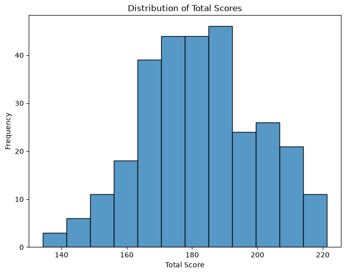
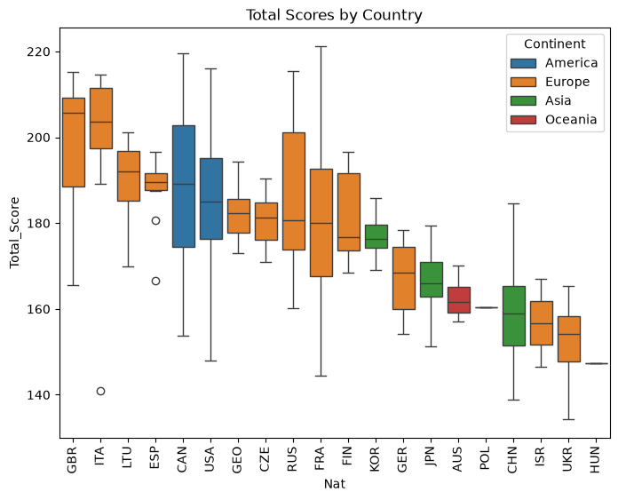
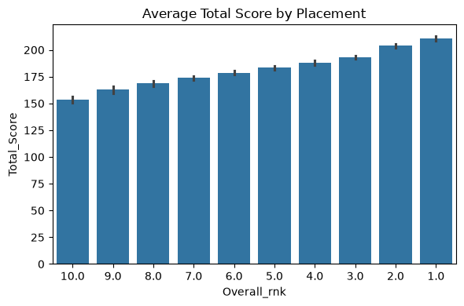

Code
import seaborn as sns
import pandas as pd
import matplotlib.pyplot as plt
import numpy as npimport seaborn as sns
import pandas as pd
import matplotlib.pyplot as plt
import numpy as npGP_Data = pd.read_csv("../Data/GP_Data.csv")
GP_Data["Continent"] = ""
# Encoding nationalities into continents:
for i in range(len(GP_Data)):
if GP_Data.loc[i, "Nat"] in ["USA", "CAN"]:
GP_Data.loc[i, "Continent"] = "America" # North & South America are considered one continent by the
# ISU (International Skating Union)
elif GP_Data.loc[i, "Nat"] in ["CZE", "FIN", "FRA", "GEO", "GER", "GBR",
"HUN", "ISR", "ITA", "LTU", "POL", "RUS",
"ESP", "UKR"]:
GP_Data.loc[i, "Continent"] = "Europe" # ISR is considered a European figure skating federation by the ISU
elif GP_Data.loc[i, "Nat"] in ["CHN", "JPN", "KOR"]:
GP_Data.loc[i, "Continent"] = "Asia"
else:
GP_Data.loc[i, "Continent"] = "Oceania"
GP_Data = GP_Data.dropna(subset=["FD_TSS"])This dataset contains competition results for ice dance, a discipline of figure skating. It covers the ISU Grand Prix of Figure Skating, a series of six major international competitions held each season, where top skaters compete for points toward qualification for the Grand Prix Final.
Each row represents a team’s results at a Grand Prix event in a given year, including their placement, overall score, detailed score information for each of the two programs performed (the Rhythm Dance (RD) and Free Dance (FD)), and information about the competition officials (judges).
GP_Data.head()| GP_Name | GP_Code | GP_Number | Year | Team | Team_Code | Total_Score | Overall_rnk | RD_BV | RD_GOE | ... | FD_TSS | FD_rnk | Nat | Nat_Judge | Nat_TS | Nat_TC | Nat_Ref | Nat_Offs. | IAM_Mem | Continent | |
|---|---|---|---|---|---|---|---|---|---|---|---|---|---|---|---|---|---|---|---|---|---|
| 0 | Skate America | GPUSA | 1.0 | 2021.0 | Madison Hubbell / Zachary Donohue | HUB_DON | 209.54 | 1.0 | 32.28 | 13.24 | ... | 125.96 | 1.0 | USA | 1.0 | 0.0 | 1.0 | 0.0 | 2.0 | 1.0 | America |
| 1 | Skate America | GPUSA | 1.0 | 2021.0 | Madison Chock / Evan Bates | CHO_BAT | 208.23 | 2.0 | 31.77 | 13.03 | ... | 125.68 | 2.0 | USA | 1.0 | 0.0 | 1.0 | 0.0 | 2.0 | 1.0 | America |
| 2 | Skate America | GPUSA | 1.0 | 2021.0 | Laurence Fournier Beaudry / Nikolaj Sorensen | FOU_SOR | 190.13 | 3.0 | 30.90 | 9.87 | ... | 114.80 | 4.0 | CAN | 1.0 | 0.0 | 0.0 | 1.0 | 2.0 | 1.0 | America |
| 3 | Skate America | GPUSA | 1.0 | 2021.0 | Olivia Smart / Adrian Diaz | SMA_DIA | 189.69 | 4.0 | 30.90 | 9.53 | ... | 115.63 | 3.0 | ESP | 1.0 | 0.0 | 0.0 | 0.0 | 1.0 | 1.0 | Europe |
| 4 | Skate America | GPUSA | 1.0 | 2021.0 | Annabelle Morozov / Andrei Bagin | MOR_BAG | 175.32 | 5.0 | 31.77 | 6.00 | ... | 106.53 | 5.0 | RUS | 1.0 | 0.0 | 0.0 | 0.0 | 1.0 | 0.0 | Europe |
5 rows × 30 columns
plt.figure(figsize=(8,6))
sns.histplot(data=GP_Data, x="Total_Score")
plt.title("Distribution of Total Scores")
plt.xlabel("Total Score")
plt.ylabel("Frequency")
plt.show()
a) This chart depicts the distribution of Total Scores earned across all Grand-Prix Series events between 2021 and 2025
b) The aim of this graph is to demonstrate which scores are considered below-average, average, and above-average for a Grand-Prix Seriews event. The histogram encoding allows this information to be conveyed by illustrating the distribution of Total Scores.
c) A major limitation of the histogram encorind is that it is granular. As a result, changing the size of the bins may change the skewness, clustering, and overall interpretation of the chart.
order = GP_Data.groupby("Nat")["Total_Score"].median().sort_values(ascending=False).index
plt.figure(figsize=(8,6))
sns.boxplot(x="Nat", y="Total_Score", hue="Continent", data=GP_Data, order=order)
plt.title("Total Scores by Country")
plt.xticks(rotation=90)
plt.show()
a) This chart shows the distribution of total scores by National Federation that has participated in the Grand-Prix series between 2021 and 2025. Colors are used to encode the continent that each federation belongs to, as recognized by the International Skating Union (ISU); the international sports governing body for figure skating>
b) The goal of this graph is to help the viewer roughly understand the state of ice dance in each national federation. The boxplot encoding allows the veiwer to compare the median quality of skaters between federations while also seeing the variance in skill within each federation.
c) One limitation in this encoding is that it does not show the number of skaters that have participated in the Grand-Prix series from each federation. This makes it difficult to tell if low variability in total score is due to all teams being of similar skill level or due to a small number of teams, which is an important distinction when understanding the state of ice dance within a federation.
plt.figure(figsize=(6,4))
sns.barplot(y='Total_Score', x='Overall_rnk', data=GP_Data, dodge=False)
plt.title('Average Total Score by Placement')
plt.gca().invert_xaxis()
plt.tight_layout()
plt.show()
a) This graph illustrates the average Total Score teams earn to win a given placement/rank at a Grand-Prix event.
b) The bar-chart encoding was chosen to illustrate the typical difference in magnitude of Total Score between different placements. Since the number of teams participating at any given Grand-Prix event is limited to 10, this also meant that the bar-chart would be overcrowded by too many columns, making it a convenient choice.
c) One limitation of this encoding is that it does not illustrate the variability of scores at each placement.